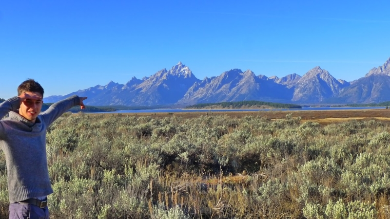

Montana/Utah : pour quelques kilomètres de plus
Bonjour à tous !
Plusieurs semaines se sont déjà écoulées depuis les dernières lignes de notre journal de bord, écrites dans notre ranch à bisons du Montana et avec 2,000 kilomètres parcourus entre temps, il est venu le temps de vous donner quelques nouvelles !
Suite et fin de l'épisode western
Nous avons donc continué à travailler dans le ranch pour deux semaines supplémentaires. A raison de six heures quotidiennes de rehaussage de barrière, l'équipe Aquamerica a finit par développer une productivité hors norme pour la tâche: à notre départ, plus de 5 miles de clôtures sont réparées ! Heureusement, nous pouvons profiter en toute liberté du reste de notre temps. J'essaie tant bien que mal d'améliorer mon niveau de cheval afin de pouvoir suivre Julia, notre co-woofeuse, sur les collines qui surplombent le ranch pendant que Grégoire s'adonne à l'éducation du petit nouveau de l'équipe, qui grandit à vue d'oeil.
Nous profitons en particulier d'un weekend pour visiter Yellowstone. Le parc n'est situé qu'à deux heures de voiture de la ferme et, pour la première fois, notre "soccer mom van" (comprendre "Van destiné au transport d'équipes de foot benjamines par des mères dévouées") transporte deux nouveaux passagers !
Grégoire et Julia devant les geysers de Yellowstone
Deux nouveaux passagers
C'est comme ça qu'on fait des ricochets sur la Yellowstone River
La singularité des paysages, marqués par la présence d'immenses champs de geysers, nous époustoufle. En passant la nuit dans le village frontalier du parc, nous disposons de suffisamment de temps pour en faire le tour complet, et être témoin de l'explosion du Old Faithful, plus gros geyser du parc ! Les bisons (sauvages, cette fois !) et les wapitis sont nombreux au rendez-vous, et nous sommes gratifiés de deux journées magnifiques. Emerveillés par ces deux belles journées, nous rentrons au ranch.
Le Old Faithful en action
Après quelques jours de rehaussage de clôture supplémentaires, de ballades et de soirées sous les étoiles du Montana, nous devons cependant reprendre la route. Nous faisons nos adieux au petit monde de la ferme: Julia, Dennis, le ranchman pour qui nous travaillions, et à la famille du ranch composée de Taunia, Chris, Hayden, Theanna, Basil et Jon. Un peu attristés par ce départ mais enthousiastes face au tour du Far West qui nous attend, nous quittons Melville le vendredi 16 octobre.
Bye-bye Montana, avec de gauche à droite Antoine, Dennis, Theanna, Grégoire, Julia et les deux chatons abandonnés
I’m on the road, again
Nous décidons de traverser à nouveau Yellowstone afin de rejoindre un second grand parc du Wyoming, Grand Teton, et il nous faut renouer rapidement avec nos vieilles habitudes campeuses. Un bon mois a passé depuis notre dernière nuit dehors, et c'est donc une soirée bien fraîche qui nous attend à Yellowstone. Nous décidons de faire un arrêt à la Morning Glory Pool, attraction importante du parc qui nous avait échappé lors de notre première visite. Nous rencontrons alors un couple philippins et leurs deux amies mexicaines qui nous surprennent par leur amicalité et qui nous prodiguent de nombreux conseils pour notre arrivée au Mexique. Cette rencontre amusante nous réchauffe un peu le cœur et chasse le petit blues qui planait depuis notre départ du Montana.
Les couleurs vives de la Morning Glory Pool
Une rencontre surprenante
Nous nous réveillons à l'aube le lendemain dans le but patriote de pouvoir assister au match France-All Blacks après notre visite de Grand Teton. La traversée de ce second parc du Wyoming offre des paysages extraordinaires: deux pointes blanches surplombent le lac Jackson sous un ciel bleu. Spinoza lui-même ne reste pas indifférent devant ce spectacle de la nature.

Grand Teton National Park
Une fois Jackson Hole, la ville centrale de Grand Teton, traversée, nous nous ruons vers Idaho Falls où le frère d'un ami d'HEC, Charles Jouglard, nous a généreusement proposé de regarder le match en sa compagnie et celle de son colocataire, Charles, français lui aussi. L'équipe de France, ce jour là, n'est malheureusement pas à la hauteur des paysages de l'Ouest, et c'est avec une petite déception au ventre que nous reprenons la route vers le Sud.
Le lendemain un ami rencontré à San Francisco, Trevor, nous acceuille pour la nuit à Salt Lake City, capitale des mormons mais surtout, ancienne ville olympique. Trevor nous emmène faire un tour dans les hauteurs de la ville, qu'il affectionne et nous visitons Park City où, souvenez vous, le suisse Simon Amman avait remporté le doublé Petit tremplin-Grand tremplin aux Jeux Olympiques d'hiver de 2002... Malgré le rapport restrictifs des mormons à l'alcool, nous pouvons y faire une degustation de whisky avant de rentrer vers la colocation de Trevor, où une soirée barbecue se prépare.
Trevor et Antoine sur les hauteurs de la ville
Des hauts et des bas
Quelques ennuis surviennent le jour suivant. La Kia Sedona qui jusqu'à présent se comportait en fidèle destrier, connaît son premier problème mécanique. La roue avant droite fume et tremble après une heure de route. Par chance, nous trouvons rapidement un mécanicien qui remplace le bloc roue et les deux freins avant. Trois heures plus tard, nous roulons vers Canyonlands, et découvrons les reliefs désertiques du sud de l'Utah. Les campings sont malheureusement pleins et l'orage tonne, nous devons donc nous résoudre à dormir dans la voiture.
Une nuit un peu à l'étroit...
...mais réveil avec vue sur Canyonlands!
Nous passons les deux jours suivant à rouler le long de la frontière entre l'Arizona et l'Utah. Les formations rocheuses des parcs Arches, de Monument Valley et des nombreux autres canyons qui peuplent l'horizon rendent la route somptueuse, et les six heures de routes quotidiennes forment un plaisir continu.
Nous arrivons donc au parc de Grand Canyon mercredi, seulement cinq jours après avoir quitté le ranch ! Les nuages un peu nombreux se lèvent quelques instant afin que nous puissions mesurer la vastitude de ce spectacle unique, puis retombent. Nous rencontrons alors un couple de jeunes français, Estelle et Kevin, qui ont eux aussi décidé de partir quelques mois à l'aventure dans l'Ouest américain. Nous partageons le repas et quelques histoires avec eux avant de repartir.
A Arches National Park, Spinoza crée le happening
Pique-nique à Monument Valley
Eclaircie attendue au Grand Canyon
C'est alors que d'autres ennuis arrivent, beaucoup plus graves cette fois. Spinoza, qui semblait en parfaite forme une heure auparavant, faiblit a vue d'oeil. Grâce aux conseils de Taunia, nous savons que des crises d'hypoglycémie soudaines peuvent survenir chez les jeunes chatons, et qu'il est alors important d'agir vite. Grégoire s'efforce de le nourrir pendant que je lance la voiture vers la ville la plus proche, mais le chaton répond de moins en moins et ses mouvements se raréfient. Grégoire bataille pour le garder éveillé et lui badigeonne les babines de sirop de maïs, afin de le garder en vie. Après deux heures de voiture, nous atteignons Saint George et sa clinique vétérinaire. Après quelques manipulations, le docteur nous annonce le pire, craignant un typhus félin. Le premier test donne pourtant un résultat négatif et, même si les soupçons demeurent pour le vétérinaire, décidément attaché à son intuition, il injecte du glucose et des antibiotiques sous sa peau. La soirée est difficile, car en ramenant le chaton au motel que nous avons réservé, celui ci ne bouge plus et respire à peine. Nous le gardons au chaud et lui parlons mais rien n'y fait, cinq heures durant, il reste amorphe, sans réaction.
C'est avec une joie sans précédent que Grégoire constate à deux heures du matin que le chat se bat, miaule enfin, se réveille et commence même à marcher ! Nous le nourrissons à nouveau, et lui laissons du repos jusqu'au lendemain matin, un soulagement infini sur le coeur. Il lui faut alors une bonne journée de plus pour se remettre et, dans les premieres heures, il semble paniqué et ne ferme pas l'oeil du trajet qui nous sépare de notre prochaine étape, Las Vegas. Nous le surveillons avec assiduité pendant les premières heures de routes à travers le désert ensoleillé du Nevada mais, heureusement, une fois arrivés, celui-ci se calme enfin et retrouve son comportement normal.
Avec l'arrivée dans le Nevada, c'est le désert sec qui apparaît
Tout va mieux pour le chaton
C'est donc avec beaucoup de baume au coeur que j'écris ces lignes. Quelle meilleure ville que Las Vegas pour célébrer la survie d'un chaton :) ?
Comme d'habitude on vous laisse sur un petit jeu. Notre voiture avait 144,940 miles au compteur lorsqu'on l'a achetée... à votre avis combien en a-t-elle maintenant ?
Combien de miles la voiture affiche-t-elle au compteur?
Celui ou celle qui s'approchera le plus de la bonne réponse aura droit à une dédicace sur notre page Facebook :) Pour répondre une seule adresse : contact@aquamerica.fr
Merci à tous pour votre lecture ! A très bientôt !
Antoine